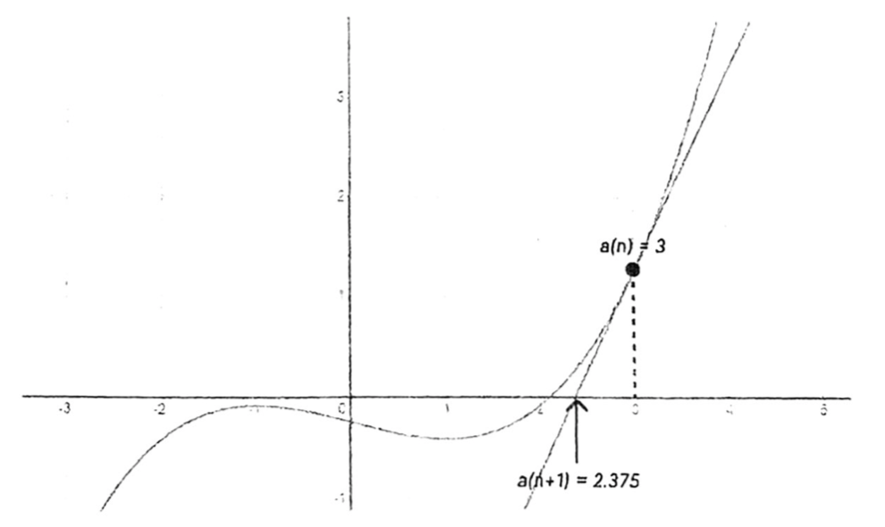

<!DOCTYPE html>
<html lang="ja" itemscope itemtype="http://schema.org/WebPage">
  <head>
    

  <meta charset="utf-8" />
  <meta http-equiv="X-UA-Compatible" content="IE=edge">
  <meta name="viewport" content="width=device-width, initial-scale=1.0, maximum-scale=1.0">

  <title>「大きな数の計算」講義ノート | 開成学園数学研究部</title>
  <meta name="description" content="題名：大きな数の計算 講師：数学研究部 OB 米田 寛峻1 日時：2022 年 8 月 30 日 1 はじめに $179&#43;443=622$, $243-234=9$, $28\times76=2128$, $2280\div24=95$, $\dots$ このような計算は，数学の問題を解くときだけでなく"><script type="application/ld+json">
{
    "@context": "http://schema.org",
    "@type": "WebSite",
    "name": "開成学園数学研究部",
    
    "url": "https:\/\/kaiseimathclub.com\/"
}
</script><script type="application/ld+json">
{
  "@context": "http://schema.org",
  "@type": "Organization",
  "name": "",
  "url": "https:\/\/kaiseimathclub.com\/"
  
  
  
  
}
</script>
<script type="application/ld+json">
{
  "@context": "http://schema.org",
  "@type": "BreadcrumbList",
  "itemListElement": [{
        "@type": "ListItem",
        "position": 1,
        "item": {
          "@id": "https:\/\/kaiseimathclub.com\/",
          "name": "home"
        }
    },{
        "@type": "ListItem",
        "position": 3,
        "item": {
          "@id": "https:\/\/kaiseimathclub.com\/camp\/camp-2022-yoneda\/",
          "name": "「大きな数の計算」講義ノート"
        }
    }]
}
</script><script type="application/ld+json">
{
  "@context": "http://schema.org",
  "@type": "Article",
  "author": {
    "name" : ""
  },
  "headline": "「大きな数の計算」講義ノート",
  "description" : "題名：大きな数の計算 講師：数学研究部 OB 米田 寛峻1 日時：2022 年 8 月 30 日 1 はじめに $179\u002b443=622$, $243-234=9$, $28\\times76=2128$, $2280\\div24=95$, $\\dots$ このような計算は，数学の問題を解くときだけでなく",
  "inLanguage" : "ja",
  "wordCount":  5533 ,
  "datePublished" : "2022-08-30T00:00:00",
  "dateModified" : "2022-08-30T00:00:00",
  "image" : "https:\/\/kaiseimathclub.com\/img\/kaiseimathclub.png",
  "keywords" : [ "" ],
  "mainEntityOfPage" : "https:\/\/kaiseimathclub.com\/camp\/camp-2022-yoneda\/",
  "publisher" : {
    "@type": "Organization",
    "name" : "https:\/\/kaiseimathclub.com\/",
    "logo" : {
        "@type" : "ImageObject",
        "url" : "https:\/\/kaiseimathclub.com\/img\/kaiseimathclub.png",
        "height" :  60 ,
        "width" :  60
    }
  }
}
</script>

<meta property="og:title" content="「大きな数の計算」講義ノート" />
<meta property="og:description" content="題名：大きな数の計算 講師：数学研究部 OB 米田 寛峻1 日時：2022 年 8 月 30 日 1 はじめに $179&#43;443=622$, $243-234=9$, $28\times76=2128$, $2280\div24=95$, $\dots$ このような計算は，数学の問題を解くときだけでなく">
<meta property="og:image" content="https://kaiseimathclub.com/img/kaiseimathclub.png" />
<meta property="og:url" content="https://kaiseimathclub.com/camp/camp-2022-yoneda/" />
<meta property="og:type" content="website" />
<meta property="og:site_name" content="開成学園数学研究部" />

  <meta name="twitter:title" content="「大きな数の計算」講義ノート" />
  <meta name="twitter:description" content="題名：大きな数の計算 講師：数学研究部 OB 米田 寛峻1 日時：2022 年 8 月 30 日 1 はじめに $179&#43;443=622$, $243-234=9$, $28\times76=2128$, $2280\div24=95$, $\dots$ このような計算は，数学の問題を解くときだけでなく">
  <meta name="twitter:image" content="https://kaiseimathclub.com/img/kaiseimathclub.png" />
  <meta name="twitter:card" content="summary_large_image" />
  <link href='https://kaiseimathclub.com/img/kaiseimathclub.png' rel='icon' type='image/x-icon'/>
  <meta name="generator" content="Hugo 0.124.1">
  <link rel="alternate" href="https://kaiseimathclub.com/index.xml" type="application/rss+xml" title="開成学園数学研究部"><link rel="stylesheet" href="https://cdn.jsdelivr.net/npm/katex@0.12.0/dist/katex.min.css" integrity="sha384-AfEj0r4/OFrOo5t7NnNe46zW/tFgW6x/bCJG8FqQCEo3+Aro6EYUG4+cU+KJWu/X" crossorigin="anonymous">
  <link rel="stylesheet" href="https://use.fontawesome.com/releases/v5.5.0/css/all.css" integrity="sha384-B4dIYHKNBt8Bc12p+WXckhzcICo0wtJAoU8YZTY5qE0Id1GSseTk6S+L3BlXeVIU" crossorigin="anonymous">
  <link rel="stylesheet" href="https://maxcdn.bootstrapcdn.com/bootstrap/3.3.7/css/bootstrap.min.css" integrity="sha384-BVYiiSIFeK1dGmJRAkycuHAHRg32OmUcww7on3RYdg4Va+PmSTsz/K68vbdEjh4u" crossorigin="anonymous"><link rel="stylesheet" href="https://kaiseimathclub.com/css/main.css" /><link rel="stylesheet" href="https://fonts.googleapis.com/css?family=Lora:400,700,400italic,700italic" />
  <link rel="stylesheet" href="https://fonts.googleapis.com/css?family=Open+Sans:300italic,400italic,600italic,700italic,800italic,400,300,600,700,800" />
  <link rel="stylesheet" href="https://kaiseimathclub.com/css/highlight.min.css" /><link rel="stylesheet" href="https://kaiseimathclub.com/css/codeblock.css" /><link rel="stylesheet" href="https://cdnjs.cloudflare.com/ajax/libs/photoswipe/4.1.2/photoswipe.min.css" integrity="sha384-h/L2W9KefUClHWaty3SLE5F/qvc4djlyR4qY3NUV5HGQBBW7stbcfff1+I/vmsHh" crossorigin="anonymous">
  <link rel="stylesheet" href="https://cdnjs.cloudflare.com/ajax/libs/photoswipe/4.1.2/default-skin/default-skin.min.css" integrity="sha384-iD0dNku6PYSIQLyfTOpB06F2KCZJAKLOThS5HRe8b3ibhdEQ6eKsFf/EeFxdOt5R" crossorigin="anonymous">
<html>
  <head>
    <title>開成学園数学研究部</title>
    <script type="application/ld+json">
    {
      "@context" : "https://schema.org",
      "@type" : "WebSite",
      "name" : "開成学園数学研究部",
      "url" : "https://kaiseimathclub.com/"
    }
  </script>
  </head>
  <body>
  </body>
</html>
  </head>
  <body>
    <nav class="navbar navbar-default navbar-fixed-top navbar-custom">
  <div class="container-fluid">
    <div class="navbar-header">
      <button type="button" class="navbar-toggle" data-toggle="collapse" data-target="#main-navbar">
        <span class="sr-only">メニューを切り替え</span>
        <span class="icon-bar"></span>
        <span class="icon-bar"></span>
        <span class="icon-bar"></span>
      </button>
      <a class="navbar-brand" href="https://kaiseimathclub.com/">開成学園数学研究部</a>
    </div>

    <div class="collapse navbar-collapse" id="main-navbar">
      <ul class="nav navbar-nav navbar-right">
        
          
            <li>
              <a title="About" href="/page/about">About</a>
            </li>
          
        
          
            <li class="navlinks-container">
              <a class="navlinks-parent">文化祭</a>
              <div class="navlinks-children">
                
                  <a href="/fest/shibuncase/shibuncase_index">部誌 (shibuncase)</a>
                
                  <a href="/fest/gp/gp_index">GP</a>
                
                  <a href="/fest/jhs/jhs_index">中学入試予想</a>
                
                  <a href="/fest/hs/hs_index">高校入試予想</a>
                
                  <a href="/fest/game/game_index">数研部員と勝負！</a>
                
                  <a href="/fest/crafts/crafts">工作展示</a>
                
                  <a href="/fest/stamp/stamp_index">スタンプラリー用問題</a>
                
                  <a href="/fest/nobel/nobel_index">開成ノーベル学会</a>
                
              </div>
            </li>
          
        
          
            <li>
              <a title="数研合宿" href="/camp/camp_index">数研合宿</a>
            </li>
          
        

        

        
      </ul>
    </div>

    
      <div class="avatar-container">
        <div class="avatar-img-border">
          <a title="開成学園数学研究部" href="https://kaiseimathclub.com/">
            
          </a>
        </div>
      </div>
    

  </div>
</nav>


    


<div class="pswp" tabindex="-1" role="dialog" aria-hidden="true">

<div class="pswp__bg"></div>

<div class="pswp__scroll-wrap">
    
    <div class="pswp__container">
      <div class="pswp__item"></div>
      <div class="pswp__item"></div>
      <div class="pswp__item"></div>
    </div>
    
    <div class="pswp__ui pswp__ui--hidden">
    <div class="pswp__top-bar">
      
      <div class="pswp__counter"></div>
      <button class="pswp__button pswp__button--close" title="Close (Esc)"></button>
      <button class="pswp__button pswp__button--share" title="Share"></button>
      <button class="pswp__button pswp__button--fs" title="Toggle fullscreen"></button>
      <button class="pswp__button pswp__button--zoom" title="Zoom in/out"></button>
      
      
      <div class="pswp__preloader">
        <div class="pswp__preloader__icn">
          <div class="pswp__preloader__cut">
            <div class="pswp__preloader__donut"></div>
          </div>
        </div>
      </div>
    </div>
    <div class="pswp__share-modal pswp__share-modal--hidden pswp__single-tap">
      <div class="pswp__share-tooltip"></div>
    </div>
    <button class="pswp__button pswp__button--arrow--left" title="Previous (arrow left)">
    </button>
    <button class="pswp__button pswp__button--arrow--right" title="Next (arrow right)">
    </button>
    <div class="pswp__caption">
      <div class="pswp__caption__center"></div>
    </div>
    </div>
    </div>
</div>


  
  
  


  

  <header class="header-section ">
    
    
    <div class="intro-header no-img">
      <div class="container">
        <div class="row">
          <div class="col-lg-8 col-lg-offset-2 col-md-10 col-md-offset-1">
            <div class="camp-heading">
              
                <h1>「大きな数の計算」講義ノート</h1>
              
              
                <hr class="small">
              
              
              
            </div>
          </div>
        </div>
      </div>
    </div>
  
  </header>


<link rel="stylesheet" href="https://kaiseimathclub.com//css/style.css">

<link rel="stylesheet" href="https://cdn.jsdelivr.net/npm/katex@0.16.2/dist/katex.min.css" integrity="sha384-bYdxxUwYipFNohQlHt0bjN/LCpueqWz13HufFEV1SUatKs1cm4L6fFgCi1jT643X" crossorigin="anonymous">

<script defer src="https://cdn.jsdelivr.net/npm/katex@0.16.2/dist/katex.min.js" integrity="sha384-Qsn9KnoKISj6dI8g7p1HBlNpVx0I8p1SvlwOldgi3IorMle61nQy4zEahWYtljaz" crossorigin="anonymous"></script>

<script defer src="https://cdn.jsdelivr.net/npm/katex@0.16.2/dist/contrib/auto-render.min.js" integrity="sha384-+VBxd3r6XgURycqtZ117nYw44OOcIax56Z4dCRWbxyPt0Koah1uHoK0o4+/RRE05" crossorigin="anonymous"
        onload="renderMathInElement(document.body);"></script>

<script>
    document.addEventListener("DOMContentLoaded", function() {
        renderMathInElement(document.body, {
            delimiters: [
                {left: "$$", right: "$$", display: true},
                {left: "$", right: "$", display: false}
            ]
        });
    });
</script>
    
<div class="container" role="main">
  <div class="row">
    <div class="col-lg-8 col-lg-offset-2 col-md-10 col-md-offset-1">
      <article role="main" class="blog-post">
        <ul>
<li><strong>題名</strong>：大きな数の計算</li>
<li><strong>講師</strong>：数学研究部 OB 米田 寛峻<sup id="fnref:1"><a href="#fn:1" class="footnote-ref" role="doc-noteref">1</a></sup></li>
<li><strong>日時</strong>：2022 年 8 月 30 日</li>
</ul>
<h1 id="1-はじめに">1 はじめに</h1>
<p>$179+443=622$, $243-234=9$, $28\times76=2128$, $2280\div24=95$, $\dots$ このような計算は，数学の問題を解くときだけでなく，日常生活でも行っていることでしょう．私たちが無意識に行っている数の計算には，どんな世界が広がっているのかを理解することが，本講義の目標です．</p>
<h1 id="2-アルゴリズムと計算量">2 アルゴリズムと計算量</h1>
<p>IT 化が進んだ現代では，「東京から熊谷まで行くのに何時間何分かかるか？」といったいろいろな問題がコンピューターによって解かれています．このような問題をプログラミングなどでどうやって解くのか，その具体的な手順のことを<strong>アルゴリズム</strong>といいます．アルゴリズムを考える上で重要となるのは，答えの計算にどのくらい時間がかかるかを表す「計算量」です．以下に，数学と関係が深い 3 つの例を挙げます．</p>
<h2 id="21-12cdotsn-の計算">2.1 $1+2+\cdots+N$ の計算</h2>
<p>$1+2+\cdots+100$ の値を，単純に $1+2=3$, $3+3=6$, $6+4=10$, $\dots$, $4950+100=5050$ と計算すると，$99$ 回の足し算を必要とします．しかし，もっと効率的な方法がります．$1$, $2$, $\dots$, $100$ を「$1$ と $100$」「$2$ と $99$」…「$50$ と $51$」という $50$ 個のペアに分けてみましょう．どのペアの値の合計も $101$ になっているので，$50\times101=5050$ とすぐに答えが求まります．</p>
<p>$1+2+\cdots+N$ を計算するときも同じです．前者の方法は $N-1$ 回の足し算を必要としますが，後者の方法は $(N\div2)\times(N+1)$ という式で $3$ 回の四則演算しか必要としません．このように，問題の解き方によって効率に大きな差があります．</p>
<h2 id="22-素数判定">2.2 素数判定</h2>
<p>自然数 $N$ が素数か判定する問題を考えます．素数とは $2$ 以上 $N-1$ 以下の整数で割り切れない数のことなので，それらの $N-2$ 個の数で割り切れないか確かめることで素数判定ができます．</p>
<p>しかし実は，合成数は必ず $\sqrt{N}$ 以下の約数を持つので，$2$ 以上 $\sqrt{N}$ 以下の整数で「試し割り」をするだけで十分です．もし全部で割り切れなければ，素数であることが分かります．</p>
<p>一般的なコンピューターでは 1 秒に $10^9$ 回程度の計算しか行えません．そのため，例えば $N=10^{16}$ 程度の数に対して素数判定をしたい場合，前者のアルゴリズムでは現実的な時間で計算が終わらないのに対し，後者のアルゴリズムでは一瞬で判定できます．</p>
<h2 id="23-計算量の-o-記法">2.3 計算量の $O$ 記法</h2>
<p>計算量の代表的な表し方として「$O$ 記法」があります．$O$ 記法は，計算回数が大まかにどの程度なのかを表します．素数判定の前者のアルゴリズムは計算回数が $N$ に比例するので計算量 $O(N)$ であり，後者のアルゴリズムは計算回数が $\sqrt{N}$ に比例するので計算量 $O(\sqrt{N})$ です．$O$ 記法では，計算回数の小さな項や定数倍は無視するのが一般的です．</p>
<h1 id="3-四則演算の筆算">3 四則演算の筆算</h1>
<p>みなさんはおそらく小学校 3〜4 年で「筆算」を習ったと思います．これを思い出すと，筆算の計算量は以下のようになることが分かるでしょう．</p>
<center><table>
<thead>
<tr>
<th style="text-align:center">四則演算</th>
<th style="text-align:center">筆算の計算量</th>
</tr>
</thead>
<tbody>
<tr>
<td style="text-align:center">$\text{($n$ 桁の整数)}+\text{($n$ 桁の整数)}$</td>
<td style="text-align:center">$O(n)$</td>
</tr>
<tr>
<td style="text-align:center">$\text{($n$ 桁の整数)}-\text{($n$ 桁の整数)}$</td>
<td style="text-align:center">$O(n)$</td>
</tr>
<tr>
<td style="text-align:center">$\text{($n$ 桁の整数)}\times\text{($n$ 桁の整数)}$</td>
<td style="text-align:center">$O(n^2)$</td>
</tr>
<tr>
<td style="text-align:center">$\text{($2n$ 桁の整数)}\div\text{($n$ 桁の整数)}$</td>
<td style="text-align:center">$O(n^2)$</td>
</tr>
</tbody>
</table>
</center>
<p>足し算や引き算は筆算でも計算量 $O(n)$ であり，十分速く行えます．一方，掛け算や割り算は筆算だと計算量 $O(n^2)$ かかり，比較的時間がかかります．</p>
<h1 id="4-高速な掛け算">4 高速な掛け算</h1>
<p>$n$ 桁の掛け算は，筆算で行うと計算量 $O(n^2)$ かかりますが，実はもっと高速な方法があります．</p>
<h2 id="41-カラツバ法">4.1 カラツバ法</h2>
<p>1960 年，当時 23 才だったソ連の数学者アナトリー・カラツバ<sup id="fnref:2"><a href="#fn:2" class="footnote-ref" role="doc-noteref">2</a></sup>は，$n$ 桁の掛け算を計算量 $O(n^{1.59})$ で行うアルゴリズムを発見しました．彼のアイデアは，$n$ 桁の掛け算を「$n/2$ 桁の掛け算 $3$ つ」を使って求める<sup id="fnref:3"><a href="#fn:3" class="footnote-ref" role="doc-noteref">3</a></sup>，というものです．</p>
<p>$n$ 桁の整数 $A=a_1\times10^{n/2}+a_0$（$a_1$, $a_0$ は $A$ の上 $n/2$ 桁と下 $n/2$ 桁）と $B=b_1\times10^{n/2}+b_0$（$b_1$, $b_0$ は $B$ の上 $n/2$ 桁と下 $n/2$ 桁）の掛け算を求めてみましょう．式の展開より，$$(a_1\times10^{n/2}+a_0)\times(b_1\times10^{n/2}+b_0)=a_1b_1\times10^n+(a_1b_0+a_0b_1)\times10^{n/2}+a_0b_0$$ であるから，$A\times B$ の計算には「$n/2$ 桁の掛け算」$4$ 回がかかります<sup id="fnref:4"><a href="#fn:4" class="footnote-ref" role="doc-noteref">4</a></sup>．ここで，$$a_1b_0+a_0b_1=(a_1+a_0)\times(b_1+b_0)-a_1b_1-a_0b_0$$ が成り立ちます．$a_1b_1$ と $a_0b_0$ は先ほどの式で既に計算されている値なので，追加で行うべき $n/2$ 桁の掛け算は $(a_1+a_0)\times(b_1+b_0)$ の $1$ 回だけです．まとめると，$n$ 桁の掛け算は</p>
<ul>
<li>$X=a_1\times b_1$</li>
<li>$Y=a_0\times b_0$</li>
<li>$Z=(a_1+a_0)\times(b_1+b_0)$</li>
</ul>
<p>という $3$ つの「$n/2$ 桁の掛け算」を求める問題に落とし込むことができ，その答えが求まりさえすればあとは足し算・引き算だけで $$A\times B=X\times10^n+(Z-X-Y)\times10^{n/2}+Y$$ と計算できます．</p>
<h2 id="42-カラツバ法の計算量">4.2 カラツバ法の計算量</h2>
<p>$n/2$ 桁の掛け算には計算量 $O((n/2)^2)$ かかるから，4.1 節の方法を使っても計算量を $3/4$ 倍にしかできていない，結局 $O(n^2)$ だ，と思うかもしれません．</p>
<p>ここで，$3$ つの「$n/2$ 桁の掛け算」にも，同じようにカラツバ法を適用してみましょう．そうすると，$9$ つの「$n/4$ 桁の掛け算」を求める問題に落とし込めます．同じように，</p>
<ul>
<li>$9$ 個の「$n/4$ 桁の掛け算」は，$27$ 個の「$n/8$ 桁の掛け算」に落とし込める</li>
<li>$27$ 個の「$n/8$ 桁の掛け算」は，$81$ 個の「$n/16$ 桁の掛け算」に落とし込める</li>
<li>（以下略）</li>
</ul>
<p>と，より小さい掛け算の問題に分解していくことができます．「$\text{$1$ 桁}\times\text{$1$ 桁}$」のところまで分解すると，最初 $n=2^d$ 桁だった掛け算は，$1$ 桁の掛け算 $3^d$ 個になります．</p>
<p>このようにして，$2^d$ 桁の掛け算が計算量 $O(3^d)$ でできます．$n=2^d$ のとき $d=\log_2{n}$ なので，カラツバ法では $n$ 桁の掛け算にかかる計算量は $$O(3^d)=O(3^{\log_2{n}})=O(n^{\log_2{3}})=O(n^{1.5849\dots})$$ となり<sup id="fnref:5"><a href="#fn:5" class="footnote-ref" role="doc-noteref">5</a></sup>，筆算よりも高速である<sup id="fnref:6"><a href="#fn:6" class="footnote-ref" role="doc-noteref">6</a></sup>といえます．</p>
<h2 id="43-高速フーリエ変換-fft-を使った掛け算">4.3 高速フーリエ変換 (FFT) を使った掛け算</h2>
<p>高速フーリエ変換 (FFT) や，これを $\bmod{p}$ 上で行った数論変換 (NTT) を使うと，$n$ 桁の掛け算を計算量 $O(n\log{n})$ で行うことができ，これが現在知られている催促のアルゴリズムです．FFT を説明するためには高校 3 年程度の数学の知識が必要なため，本講義では解説しないことにします．</p>
<p>これは，数百万桁程度の掛け算なら $1$ 秒もかからず行えることを意味します．次章以降では，特に断りなく $n$ 桁の掛け算を計算量 $O(n\log{n})$ で行えるものとします．</p>
<h1 id="5-高速な割り算">5 高速な割り算</h1>
<p>先ほど，$n$ 桁の掛け算が計算量 $O(n\log{n})$ でできることを説明しました．では，割り算は筆算の計算量 $O(n^2)$ より速くできるのでしょうか？</p>
<h2 id="51-アルゴリズムの設計図">5.1 アルゴリズムの設計図</h2>
<p>$2n$ 桁の整数 $A$，$n$ 桁の整数 $B$ に対して，$A\div B$ の商を求めるために，以下の手順を考えます．</p>
<ol>
<li>$B$ の逆数 ($=1/B$) を小数第 $2n$ 位まで求める．これを $M\times10^{-2n}$ とする．</li>
<li>$(A\times M)\times10^{-2n}$ の整数部分を計算する．これが $A\div B$ の商とほとんど一致する<sup id="fnref:7"><a href="#fn:7" class="footnote-ref" role="doc-noteref">7</a></sup>．</li>
</ol>
<p>4 章で述べたように掛け算は計算量 $O(n\log{n})$ でできるので，あとは $B$ の逆数を高速に求められるかという問題になります．</p>
<h2 id="52-ニュートン法">5.2 ニュートン法</h2>
<p>ニュートン法とは，関数 $f(x)$ に対して $f(x)=0$ の解 $x$ を高速に求める手法です．以下のように解の近似値 $a_0$, $a_1$, $a_2$, $\dots$ を求めていくことで精度を桁数にして倍々に上げていきます．</p>
<ol>
<li>初期値 $a_0$ を設定する（これは $f(x)=0$ の解にある程度近い値にしたい）．</li>
<li>$n=0$, $1$, $2$, $\dots$ の順に以下を行う．
<ul>
<li>$a_{n+1}$ を「グラフ $y=f(x)$ の点 $(a_n,f(a_n))$ を通る接線と直線 $y=0$ の交点の $x$ 座標」とする．</li>
</ul>
</li>
<li>十分な精度が得られたら，2. のループを打ち切る．</li>
</ol>
<p>手順 2. を数式で表すと，以下のようになります<sup id="fnref:8"><a href="#fn:8" class="footnote-ref" role="doc-noteref">8</a></sup>．$$a_{n+1}=a_n-\dfrac{f(a_n)}{f ^ \prime(a_n)}$$</p>
<p></p>
<h2 id="53-1b-の計算">5.3 $1/B$ の計算</h2>
<p>$1/B$ を小数第 $2n$ 位までの精度で求めることを考えます．まず，$f(x)=1/x-B$ としてニュートン法を適用しましょう．グラフ $y=f(x)$ の点 $(a_n,f(a_n))$ における傾きは $-1/a_n^2$ なので，$$a_{n+1}=a_n-\dfrac{f(a_n)}{f ^ \prime(a_n)}=a_n-\dfrac{1/a_n-B}{-1/a_n^2}=a_n+(a_n-Ba_n^2)=2a_n-Ba_n^2$$ という「割り算を使わない式」を使って $1/B$ を精度良く求められます．</p>
<p>初期値 $a_0$ を十分な精度<sup id="fnref:9"><a href="#fn:9" class="footnote-ref" role="doc-noteref">9</a></sup>で設定すれば，$a_1$, $a_2$, $\dots$ と近似値を更新していくにつれ精度の桁数が倍々になっていきます．以下の表は，$B=13$ の場合で，初期値を $a_0=0.05$ に設定してニュートン法を行った場合の計算結果です．</p>
<center><table>
<thead>
<tr>
<th style="text-align:center">$n$</th>
<th style="text-align:left">$a_n$</th>
<th style="text-align:center">精度（桁数）</th>
</tr>
</thead>
<tbody>
<tr>
<td style="text-align:center">$0$</td>
<td style="text-align:left">$0.05$</td>
<td style="text-align:center">$0$ 桁</td>
</tr>
<tr>
<td style="text-align:center">$1$</td>
<td style="text-align:left">$0.0675$</td>
<td style="text-align:center">$0$ 桁</td>
</tr>
<tr>
<td style="text-align:center">$2$</td>
<td style="text-align:left">$0.07576875$</td>
<td style="text-align:center">$1$ 桁</td>
</tr>
<tr>
<td style="text-align:center">$3$</td>
<td style="text-align:left">$0.0769057548046\dots$</td>
<td style="text-align:center">$3$ 桁</td>
</tr>
<tr>
<td style="text-align:center">$4$</td>
<td style="text-align:left">$0.0769230730223\dots$</td>
<td style="text-align:center">$7$ 桁</td>
</tr>
<tr>
<td style="text-align:center">$5$</td>
<td style="text-align:left">$0.0769230769230\dots$</td>
<td style="text-align:center">$14$ 桁</td>
</tr>
</tbody>
</table>
</center>
<p>したがって，$a_{\log_2{n}}$ くらいまで求めれば十分です．精度 $2n$ 桁で $a_0$, $a_1$, $a_2$, $\dots$ を求めていくと，求めるべき $1/B$ の値が計算量 $O(n\log^2{n})$ で計算できます<sup id="fnref:10"><a href="#fn:10" class="footnote-ref" role="doc-noteref">10</a></sup>．</p>
<h2 id="54-計算量の改善">5.4 計算量の改善</h2>
<p>5.3 節では $m\approx\log_2{n}$ として $a_0$, $a_1$, $\dots$, $a_m$ をすべて精度 $2n$ 桁で求めていましたが，$a_0$ を精度 $1$ 桁，$a_1$ を精度 $2$ 桁，$a_2$ を精度 $4$ 桁，…で求めていっても必要なループ回数はほとんど変わりません．計算回数は $$1\log_2{1}+2\log_2{2}+4\log_2{4}+8\log_2{8}+\cdots+n\log_2{n}=O(n\log{n})$$ となり，逆数 $1/B$ の小数点以下 $2n$ 桁が計算量 $O(n\log{n})$ で求まることを意味します．したがって，$A\div B$ の割り算は計算量 $O(n\log{n})$ でできます．</p>
<h1 id="6-sqrt2-の計算">6 $\sqrt{2}$ の計算</h1>
<p>$f(x)=x^2-2$ としてニュートン法を適用させると，$\sqrt{2}$ の値を精度良く求めることができます．グラフ $y=f(x)$ の点 $(a_n,f(a_n))$ における傾きは $2a_n$ なので，ニュートン法の漸化式は $$a_{n+1}=a_n-\dfrac{a_n^2-2}{2a_n}$$ となります．5.3 節と同様，精度は桁数にして倍々に増えていくので，$a_{\log_2{n}}$ くらいまでしか求める必要はありません．5.4 節で使ったテクニックと組み合わせると，$\sqrt{2}$ の小数点以下 $n$ 桁を計算量 $O(n\log{n})$ で求められます．</p>
<h1 id="7-発展的なトピック">7 発展的なトピック</h1>
<p>講義の残り時間によっては，発展的なトピックとして，例えば以下のものを扱う可能性があります．</p>
<ul>
<li>$n!$ の計算（計算量 $O(n\log^3{n})$）</li>
<li>$e=2.71828\dots$ の計算（計算量 $O(n\log^2{n})$）</li>
<li>$\pi=3.14159\dots$ の計算（計算量 $O(n\log^3{n})$）</li>
<li>素数判定（桁数を $n$ として，計算量 $O(n^2\log{n})$）</li>
</ul>
<h1 id="8-練習問題">8 練習問題</h1>
<p>本講義の内容を理解するために，いくつかの練習問題を挙げます．</p>
<div
    class="alert alert-success"
    role="alert"><p><strong>問題 1</strong></p>
<p>$20220827\times12340625$ をカラツバ法を使って計算しなさい．</p>
</div>
<div
    class="alert alert-success"
    role="alert"><p><strong>問題 2</strong></p>
<p>$\sqrt[3]{2}$ の小数点以下 $n$ 桁を求める方法を考えなさい．</p>
</div>
<div
    class="alert alert-success"
    role="alert"><p><strong>問題 3</strong></p>
<p>$f(x)=1/x^2-2$ として，初期値 $a_0=0.5$ でニュートン法を適用することを考える．</p>
<ol>
<li>$a_{n+1}$ を，$a_n$ を使ったできるだけ簡単な式で表しなさい．</li>
<li>ニュートン法で最終的に求まる値を答えなさい．</li>
<li>2. の値を $2$ 倍すると，何が得られるか．</li>
<li>3. の結果が意味することについて論ぜよ．</li>
</ol>
</div>
<div
    class="alert alert-success"
    role="alert"><p><strong>問題 4</strong></p>
<p>カラツバ法では，$n$ 桁の掛け算を「$n/2$ 桁の掛け算」$3$ つに落とし込むことで，計算量 $O(n^{1.59})$ の掛け算を実現した．これと同じように，$n$ 桁の掛け算を「$n/3$ 桁の掛け算」$5$ つに落とし込むことで，掛け算を高速化することを考えたい．なお，この問題では，$A=a_2\times10^{2n/3}+a_1\times10^{n/3}+a_0$, $B=b_2\times10^{2n/3}+b_1\times10^{n/3}+b_0$ として考える．</p>
<ol>
<li>もし上の目標が実現されれば，掛け算の計算量はどのくらいになるか．</li>
<li>$f(x)=(a_2x^2+a_1x+a_0)(b_2x^2+b_ax+b_0)$ として，$f(-2)$, $f(-1)$, $f(0)$, $f(1)$, $f(2)$ の値を求めよ．</li>
<li>$f(x)$ は $c_4x^4+c_3x^3+c_2x^2+c_1x+c_0$ という式で表される．$c_4$, $c_3$, $c_2$, $c_1$, $c_0$ を，2. で求めた 5 つの値を用いて表せ．</li>
<li>3. の結果が意味することについて論ぜよ．</li>
</ol>
</div>
<h1 id="9-おわりに">9 おわりに</h1>
<p>本講義は，私が高校 3 年の時は執筆した記事「超高速！多倍長整数の計算手法」に基づいたものになっています．累計 7 万回以上閲覧され，感激しています．ぜひ読んでいただけるとうれしいです．</p>
<ul>
<li>超高速！多倍長整数の計算手法【前編：大きな数の四則計算を圧倒的な速度で！】<a href="">https://qiita.com/square1001/items/1aa12e04934b6e749962</a></li>
<li>超高速！多倍長整数の計算手法【後編：N! の計算から円周率 100 万桁の挑戦まで】<a href="">https://qiita.com/square1001/items/def73e29dd46b156c248</a></li>
</ul>
<p>最後に，この講義によって，数学だけでなくアルゴリズムや情報科学にも興味を持っていただけたならば，私としては本当はうれしい限りです．</p>
<div class="footnotes" role="doc-endnotes">
<hr>
<ol>
<li id="fn:1">
<p>開成高等学校を 2021 年 3 月に卒業．現在は東京大学理科一類に所属．&#160;<a href="#fnref:1" class="footnote-backref" role="doc-backlink">&#x21a9;&#xfe0e;</a></p>
</li>
<li id="fn:2">
<p>Anatoly Alexeyevich Karatsuba (1937 - 2008)．&#160;<a href="#fnref:2" class="footnote-backref" role="doc-backlink">&#x21a9;&#xfe0e;</a></p>
</li>
<li id="fn:3">
<p>簡単のため，ここでは $n$ が偶数として考えますが，$n$ が奇数のときも真ん中あたりで分けると同様のことができます．&#160;<a href="#fnref:3" class="footnote-backref" role="doc-backlink">&#x21a9;&#xfe0e;</a></p>
</li>
<li id="fn:4">
<p>「$\times10^n$」などは，数の右側に $0$ をいくつか書き加えるだけなので，計算量 $O(n^2)$ かかる掛け算には含めません．&#160;<a href="#fnref:4" class="footnote-backref" role="doc-backlink">&#x21a9;&#xfe0e;</a></p>
</li>
<li id="fn:5">
<p>対数 $\log_a{b}$ は，$a^x=b$ を満たす実数 $x$ のことを指します．これは高校 2 年で習う内容です．例えば $\log_3{243}=5$, $\log_2{3}=1.5849\dots$ などが具体例です．本講義では，特に断りがなければ，$\log{n}$ は $\log_2{n}$ を指すものとします．&#160;<a href="#fnref:5" class="footnote-backref" role="doc-backlink">&#x21a9;&#xfe0e;</a></p>
</li>
<li id="fn:6">
<p>実際は，桁数 $n$ が小さいときは筆算の方が速く，この理由は筆算の方が計算量にかかる「定数倍」が小さいからです．しかし，$n$ が一定以上になれば，カラツバ法の方が確実に速くなります．&#160;<a href="#fnref:6" class="footnote-backref" role="doc-backlink">&#x21a9;&#xfe0e;</a></p>
</li>
<li id="fn:7">
<p>この計算で得られる値の誤差は $\pm1$ 以内になるので，実際の商がどうなるかは $\pm1$ の範囲を掛け算でチェックすれば分かる．&#160;<a href="#fnref:7" class="footnote-backref" role="doc-backlink">&#x21a9;&#xfe0e;</a></p>
</li>
<li id="fn:8">
<p>$f ^ \prime(x)$ は関数 $f(x)$ の微分を表します．微分は高校 2 年で習う内容ですが，まだ知らない方は「グラフの点 $(x,f(x))$ における傾き」ととらえておくと良いでしょう．&#160;<a href="#fnref:8" class="footnote-backref" role="doc-backlink">&#x21a9;&#xfe0e;</a></p>
</li>
<li id="fn:9">
<p>誤差 $2$ 倍ぐらいでも十分です．&#160;<a href="#fnref:9" class="footnote-backref" role="doc-backlink">&#x21a9;&#xfe0e;</a></p>
</li>
<li id="fn:10">
<p>この式は $n(\log{n})^2$ と同じ意味ですが，計算量の文脈では「$n\log^2{n}$」と書くことが多いです．&#160;<a href="#fnref:10" class="footnote-backref" role="doc-backlink">&#x21a9;&#xfe0e;</a></p>
</li>
</ol>
</div>


        

        

        
          

          
        
      </article>

      
        <ul class="pager blog-pager">
          
            <li class="previous">
              <a href="https://kaiseimathclub.com/camp/camp-2015/" data-toggle="tooltip" data-placement="top" title="2015年度数研模試">&larr; 前ページ</a>
            </li>
          
          
        </ul>
      


      

    </div>
  </div>
</div>

      
<footer>
  <div class="container">
    <div class="row">
      <div class="col-lg-8 col-lg-offset-2 col-md-10 col-md-offset-1">
        <ul class="list-inline text-center footer-links">
          
          
        </ul>
        <p class="credits copyright text-muted">
          &copy;
          
            2024
          
          
        </p>
        
        <p class="credits theme-by text-muted">
          <a href="https://gohugo.io">Hugo v0.124.1</a> powered &nbsp;&bull;&nbsp; Theme <a href="https://github.com/halogenica/beautifulhugo">Beautiful Hugo</a> adapted from <a href="https://deanattali.com/beautiful-jekyll/">Beautiful Jekyll</a>
          
        </p>
      </div>
    </div>
  </div>
</footer><script src="https://cdn.jsdelivr.net/npm/katex@0.12.0/dist/katex.min.js" integrity="sha384-g7c+Jr9ZivxKLnZTDUhnkOnsh30B4H0rpLUpJ4jAIKs4fnJI+sEnkvrMWph2EDg4" crossorigin="anonymous"></script>
<script src="https://cdn.jsdelivr.net/npm/katex@0.12.0/dist/contrib/auto-render.min.js" integrity="sha384-mll67QQFJfxn0IYznZYonOWZ644AWYC+Pt2cHqMaRhXVrursRwvLnLaebdGIlYNa" crossorigin="anonymous"></script>
<script src="https://code.jquery.com/jquery-3.5.1.slim.min.js" integrity="sha384-DfXdz2htPH0lsSSs5nCTpuj/zy4C+OGpamoFVy38MVBnE+IbbVYUew+OrCXaRkfj" crossorigin="anonymous"></script>
<script src="https://maxcdn.bootstrapcdn.com/bootstrap/3.3.7/js/bootstrap.min.js" integrity="sha384-Tc5IQib027qvyjSMfHjOMaLkfuWVxZxUPnCJA7l2mCWNIpG9mGCD8wGNIcPD7Txa" crossorigin="anonymous"></script>

<script src="https://kaiseimathclub.com/js/main.js"></script>
<script src="https://kaiseimathclub.com/js/highlight.min.js"></script>
<script> hljs.initHighlightingOnLoad(); </script>
<script> $(document).ready(function() {$("pre.chroma").css("padding","0");}); </script><script> renderMathInElement(document.body); </script><script src="https://cdnjs.cloudflare.com/ajax/libs/photoswipe/4.1.2/photoswipe.min.js" integrity="sha384-QELNnmcmU8IR9ZAykt67vGr9/rZJdHbiWi64V88fCPaOohUlHCqUD/unNN0BXSqy" crossorigin="anonymous"></script>
<script src="https://cdnjs.cloudflare.com/ajax/libs/photoswipe/4.1.2/photoswipe-ui-default.min.js" integrity="sha384-m67o7SkQ1ALzKZIFh4CiTA8tmadaujiTa9Vu+nqPSwDOqHrDmxLezTdFln8077+q" crossorigin="anonymous"></script><script src="https://kaiseimathclub.com/js/load-photoswipe.js"></script>


    
  </body>
</html>

